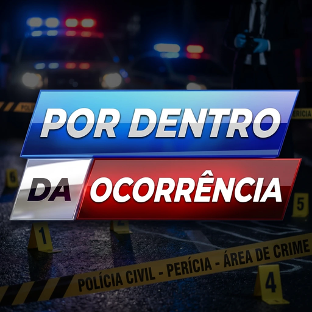

Ocorrências policiais reais, contadas a partir da fonte original
Documentários em português sobre abordagens, perseguições e operações federais dos Estados Unidos, montados com as gravações que as próprias agências divulgaram: câmera corporal, câmera de viatura, imagens aéreas, rádio e relatórios oficiais.
O que está confirmado e o que é versão de alguém aparecem sempre separados na narração.

Documentários recentes
todos os vídeos


Shorts
todos os shorts Perseguição a pé em Portland: a faca que a perícia mediu
Perseguição a pé em Portland: a faca que a perícia mediu
 ELE CHAMOU A POLÍCIA, AVISOU QUE IA BUSCAR A ESPADA E PEDIU PARA SER BALEADO!
ELE CHAMOU A POLÍCIA, AVISOU QUE IA BUSCAR A ESPADA E PEDIU PARA SER BALEADO!
 Dois policiais atiraram e nenhum tiro acertou: o que a câmera mostra
Dois policiais atiraram e nenhum tiro acertou: o que a câmera mostra
 A MAIOR APREENSÃO DE DROGA NO PACÍFICO DESDE 2009!
A MAIOR APREENSÃO DE DROGA NO PACÍFICO DESDE 2009!
 Uso de força letal em Portland: o tenente não usava câmera corporal
Uso de força letal em Portland: o tenente não usava câmera corporal
 O POLICIAL ORDENOU QUE ELE PARASSE E O DISPARO ACONTECEU EM SEGUIDA!
O POLICIAL ORDENOU QUE ELE PARASSE E O DISPARO ACONTECEU EM SEGUIDA!
As duas séries do canal
Operação Federal
Apreensões no mar, túneis na fronteira, tráfico e capturas, nas imagens das agências federais americanas, como a Guarda Costeira e a alfândega.
Ocorrências policiais
Abordagens e perseguições gravadas pela câmera corporal dos policiais, com o contexto do relatório oficial de cada caso.
Shorts todos os dias
Cortes curtos dos documentários e casos rápidos, no YouTube, no Instagram, no Facebook e no TikTok.
Como cada vídeo é feito
1. A gravação original
Só entra imagem divulgada pela própria agência, no canal ou no site oficial dela. Vídeo já editado por outro canal nunca entra.
2. Os documentos
Relatórios, comunicados e decisões oficiais dão o contexto. Cada afirmação da narração tem uma fonte.
3. A narração
Narrador neutro, que relata e não opina. O que não está confirmado é atribuído a quem disse.
4. O crédito
Toda gravação é creditada à agência que a divulgou, nos créditos do vídeo e na descrição.